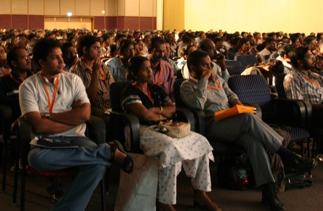
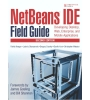

Monday, May 15, 2006
10 am - 6 pm
Argent Hotel, San Francisco

Learn from the experts what's happening with the NetBeans IDE and
platform at the third annual NetBeans Software Day! James Gosling - the
father of Java technology -- as well as other Java technology luminaries
were present to discuss the future of Java developer tools and the
rich client platform. NetBeans Day featured a keynote by
Joshua Bloch and Neal Gafter
who are also known as "Click and Hack - The Type-It Brothers."
The event is also a great opportunity for
community members to meet each other face-to-face, see demos of the next
generation of NetBeans software and learn how easy it is to develop
NetBeans plug-ins and extend the NetBeans platform.

NetBeans Software Day 2006 took place on Monday, May 15,
the Argent Hotel in San Francisco.
It is a companion event to the JavaOne 2006 Conference
which began the following day. You do not need to be registered for JavaOne
— NetBeans Software Day is free for anyone who wishes to attend.
The first 400 attendees received not only a 256 MB USB drive but also
a complimentary copy of the second edition of the soon to be
published NetBeans IDE Field Guide covering all the new 5.0 features!
A reception was held immediately after the event,
you are invited to come and meet NetBeans software partners and developers.
Presentations 2006
10:00
|
Registration opens.
|
12:00
|
Opening Keynote: Jonathan Schwartz and Tim Cramer reveal past, present and future of NetBeans IDE.
|
|
Track A
NetBeans IDE: Developing Applications for the Enterprise and Beyond.
These sessions describe the IDE's
capabilities for developing enterprise and mobile applications. Java ME
and EE development tools will be demonstrated, along with tools for
creating Service Oriented Architecture applications.
|
|
Track B
NetBeans IDE: Developing Client Applications.
These sessions focus on current and upcoming tools for building user
interfaces and client applications. Java SE and EE development tools will be
demonstrated, along with an in-depth description of how to build on the
NetBeans Platform.
|
1:30
|
NetBeans Mobility Pack
- Accessing web services from a mobile phone
- Using Project Matisse in CDC applications on smart phones
- Profiling mobile applications
- Prizes!
|
|
Visual Development Tools
- Project Matisse Roadmap:
- Planned enhancements and overall direction for the GUI builder.
- New Swing frameworks
- Demos!
- Visual Design Tools for Creating Web Applications
- Rapid web application development in the NetBeans IDE
- WYSIWYG web page editor including page flow and outline views
- Leverage the power of Java Server Faces and AJAX
- Drag-and-drop to bind page components to data sources
- Simplified creation of smart web clients using XTT
|
2:30
|
Java EE 5 development with NetBeans IDE
- Using the new Java EE tools in the NetBeans IDE for:
- Object/Relational mapping
- Rapid application development
- JAX-WS 2.0
- Project Tango (Web Services Interoperability Technology)
- Inline verification via editor hints
- Debugging Java EE applications
- Profiling Java EE applications
|
|
Developing on the NetBeans Platform, Part 1
- What is the NetBeans Platform?
- What can you do with the NetBeans Platform?
- Developing simple applications on the NetBeans Platform
|
3:30
|
NetBeans Enterprise Pack:
Get a head start on developing Service Oriented Architecture applications.
- Creating services for existing applications
- Orchestrating services to create a composite application
- Using the UML and XML tools
|
|
Developing on the NetBeans Platform, Part 2
- Advantages of using the modular architecture of the NetBeans Platform
- What is a module?
- How to integrate a module into the NetBeans IDE
- Demo: Lattix LDM
|
4:40
|

Closing keynote: James Gosling awards very special prizes to NetBeans Community members.
|
5:30
|
Free drinks.
|
Agenda is subject to change.
See also: NetBeans sessions and BOFs at JavaOne 2006 Conference
Speaker Bios

Joshua Bloch
Joshua Bloch is chief Java architect at Google and author of the Jolt Award-winning book, "Effective Java." He is coauthor of "JavaPuzzlers: Traps, Pitfalls, and Corner Cases." He was previously a Distinguished Engineer at Sun Microsystems and a Senior Systems Designer at Transarc. Josh led the design and implementation of numerous Java platform features, including JDK 5.0 language enhancements and the award-winning Java Collections Framework. He holds a Ph.D. in computer science from Carnegie Mellon University.

Tim Cramer
Tim Cramer has been at Sun for 13 years. Currently, he is the Senior Director of Java Tools after being the Engineering Director for NetBeans.
Prior to that, he managed the Java performance group,
worked on the dynamic compilers, and also did static compilers. Prior to
Sun he worked on supercomputers for Supercomputer Systems, Inc and Lawrence
Livermore National Lab. Tim is very excited to help shepherd the resurgence of NetBeans.
He will MC NetBeans Day.

Neal Gafter
Neal Gafter is a software engineer and Java evangelist at Google. He was previously a senior staff engineer at Sun Microsystems, where he led the development of the Java compiler and implemented the Java language features in releases 1.4 through 5.0. Neal is coauthor of "Java Puzzlers: Traps, Pitfalls, and Corner Cases." He was a member of the C++ Standards Committee and led the development of C and C++ compilers at Sun Microsystems, Microtec Research, and Texas Instruments. He holds a Ph.D. in computer science from the University of Rochester.

James Gosling
James Gosling received a BSc in Computer Science from the
University of Calgary
Canada in 1977. He received a PhD in Computer Science
from
Carnegie-Mellon University in
1983. The title of his thesis was "The Algebraic Manipulation of Constraints".
He is currently a VP & Fellow at
Sun Microsystems. He has
built satellite data acquisition systems, a multiprocessor version of Unix,
several compilers, mail systems and window managers. He has also built a WYSIWYG
text editor, a constraint based drawing editor and a text editor called `Emacs'
for Unix systems. At Sun his early activity was as lead engineer of the NeWS
window system. He did the original design of the
Java programming language
and implemented its original compiler and virtual machine.
He has recently been a contributor to
the Real-Time Specification for Java,
and most recently was a researcher
at Sun labs
where his primary interest was software development
tools. He is now the Chief Technology Officer of Sun's Developer Products group.

Jonathan Schwartz
Jonathan Schwartz is president and chief executive officer of Sun Microsystems. He became Sun's CEO in 2006, succeeding the Company's co-founder and current chairman of the board of directors, Scott McNealy. Schwartz was promoted to president and chief operating officer in 2004 and managed all operational functions at Sun - from product development and worldwide marketing, to global sales and manufacturing. An inveterate blogger, Schwartz has led Sun's drive toward transparency and openness in everything the organization stands for.
A leader behind many of Sun's open source and standard setting initiatives, from the open sourcing of Sun's flagship Solaris operating system and UltraSPARC microprocessor, to the Liberty Alliance, a cross industry effort to drive royalty free standards for secure network identity, Jonathan's been an outspoken advocate for the network as a utility with more than just value for the computing industry - but as a tool for economic, social and political progress.
He joined sun in 1996 after the Company acquired Lighthouse Design, where he was CEO and co-founder. Prior to that, Schwartz was with McKinsey & Co. in New York City. Schwartz received degrees in economics and mathematics from Wesleyan University.
![[NetBeans Day logo]](../../../../images_www/articles/worldtour/NB_250px.gif "NetBeans Software Day 2006")

{kind=link}